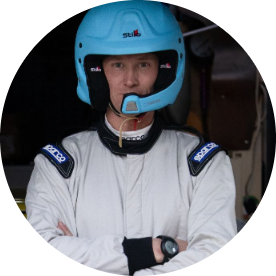

My resume "project Capstone 1"
Nico Calliari

Summary
Enterprising,Devoted,Curious.
Education
Graduated from the "Italian culinary school" of Levico Terme.
Work Experience
-
Lift Operator
December 2014 - Present
- control and management operations;
- general, special and scheduled maintenance;
- problem solving of any kind.
Skills
- Organization and preparation Skill ⭐️⭐️⭐️⭐️
- Learning Ability ⭐️⭐️⭐️⭐️⭐️
- Problem Solving Ability ⭐️⭐️⭐️⭐️
General Awards
- Member of "Italian Aerobatic Paragliding National Team" 2017-2021.
Other